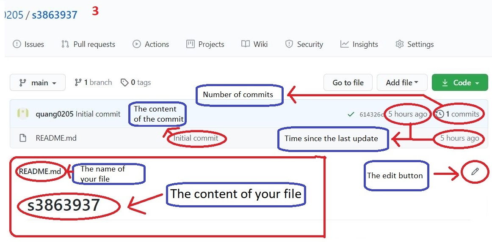
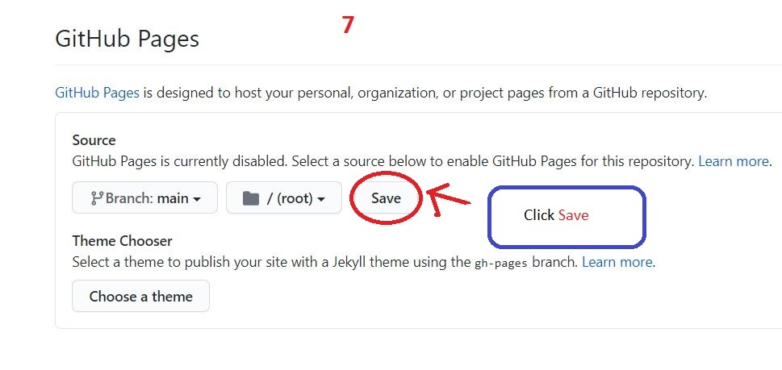

Table of contents:
- Github at a Glance
- What is GitHub?
- GitHub.com
- Scope
- What is Git?
- Free and open source
- Fast speed and compact
- Backup offline
- High safety
- Does not require a strong hardware
- Branching is easier
- How to install Git and GitHub
- Basic Git commands
- git clone
- config
- add
- commit
- push
- pull
- How to resolve conflicts
- Branching
- Extra tutorial
Git and GitHub at a glance
- What is GitHub?
- GitHub.com
- Scope
- What is Git?
- Advantages of Git
- Free and open source
- Fast speed and compact
- Backup offline
- High safety
- Does not require a strong hardware
- Branching is easier
GitHub is a service that provides a web-based Git source code repository for software development projects. GitHub offers both a paid version and a free version for accounts. Open source projects will be provided with a free repository.
Projects on GitHub.com can be accessed and managed using the standard Git command-line interface; all standard Git commands work with it. GitHub.com also allows users to browse public repositories on the site. Many desktop clients and Git plugins are also available. The site provides social media-like functions such as feed, follower, wiki (using wiki software called Gollum) and a social media graph to show how developers work on their versions ("branches") of a repository and which branches (and branches within that branch) are up-to-date.
GitHub is mainly used for hosting software source code, but is also commonly used with many file types such as Final Cut or Word documents.
Git is the name of a Distributed Version Control System (DVCS) which is one of the most popular distributed version management systems today.
Git is released under the GPL's open source license. It is available for free on the net. You can use Git to manage niche projects without paying a penny. As an open source, you can download its source code and also make changes according to your requirements.
When most of the operations are done internally, it gives a huge benefit in speed. Git is not server dependent, that is the reason why there is no need to interact with the remote server (git server) for every operation.
It is rare to lose data when there are many copies of it. The data is present to any client, so it can be used in the event of a failure or a server shutdown.
Cannot change file, date and commit message and any other data from Git database without knowing Git.
Developers do not interact with the server unless they need to publish changes. All of this happens on the client side, so the server hardware can be really a simple matter.
Branch management with Git is very simple. It only takes a few seconds to create, delete, and import branches.
How to install Git and GitHub
- GitHub
- Step 1: Following the link: https://github.com or search on Google Github
- Step 2: Creating an account or sign in
- Step 3:Start a project(follow under picture)
- After you click on the Start a project, this will appear a form
- After you complete this form, you will see the screen like: 
- On the top right of the screen, you will see the Setting button, click on that
- Scroll down until you see GitHub Pages
- Clik on None button, choose main
- After that, click save 
- Git
- Step 1: Following the link: https://desktop.github.com/ or search on Google Git Desktop
- Download result:
- Now, you need to install Git Desktop
- After install you need to run it
- Log in on GitHub Desktop to connect to your GitHub account
- Visual Studio Code
- Having two situations:
-
- Your Visual Studio Code can run the git command immediately (Everything is okay)
- Your Visual Studio Code cannot run git command
- Following the below step:
- Open your Visual Studio Code
- First, you need to check that you have installed GitHub Extension or not
- If not, you have to download it, you can download it on Marketplace, and then activate it


Basic Git commands
- git clone (use to create a clone of your repository and download it in other to repear for edit it on Visual Studio Code)
- Syntax: git clone [{URL}]
- config
- Syntax: git config
- Syntax: git config [{option}]
- Syntax: git config -l
- *Syntax: git config --gobal user.name 'username'
- *Syntax: git config --gobal user.email 'useremail'
- add (use after you make a changes in your file)
- Syntax: git add [{filename}]
- Syntax: git add .
- commit (use after you use git add)
- Syntax: git commit -m'message'
- Syntax: git commit -a
- push (use after git commit)
- Syntax: git push [:remote:][:branch:]
- pull
- Syntax: git pull [:remote:][:branch:]
Copy and download your repository from the GitHub page
In your repository

In your Visual Studio Code write syntax

Will show the list of git config command

The general syntax of the git config command, where option is the command the user wants to use
Open the git info list

User Name Settings

User Email Settings

Note *:If they are not used, when using the push command will have an anonymous error
Add one file to index

Add all file to index

Commit the changes to head (but not yet to the remote repository)

Commit all file added to index with git add, and commit any tiles changed since them
Used to push changes to remote repository
In your Visual Studio Code

In your remote repository

Use to update the latest changes from the remote repository, and then put the content in your local repository.

How to resolve conflicts
- What is conflicts?
- Solution
- To resolve the conflict in git, simply edit the contents on the file that caused the conflict, then add, commit to that file.
- To minimize conflicts within a team with many members, you should define a process from the outset so that all team members working on the same project are known when using Git. Here are a few suggestions for getting more productive:
- Commit frequently: don't wait until you have a large number of generated scripts to commit and push them to the Git remote repository. The smaller the script is pushed, the easier it is for you to resolve the conflict.
- It is advisable to pull changes from the Git remote repository before working on new scripts and before committing.
- Each member should work on each feature in separate branches at a time.
In a source control system like Git, conflicts can occur when two or more people change the same file. Conflicts can occur in the member's local repository or the Github remote repository.
Branching
- How to create a branch
- Syntax: git branch 'branchname'
- Location
- How to switch branches
- Syntax: git checkout 'branchname'
- How to merge branches
- Syntax: git merge 'branchname'
- How to push branch to remote repository
- How to delete branches


Extra tutorial
- Open Terminal screen
- cd command
- git tag